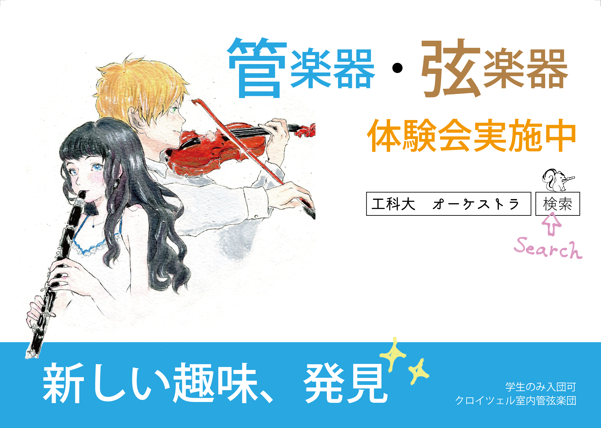

■団員募集

・入団について
初心者大歓迎！！
初心者経験者を問わず、当楽団で共に活動してくださる団員の方を募集しています。
どんな楽器を自分がやりたいのかわからない、今までに経験した楽器以外に触れてみたいという方も、楽器体験会にて団員が紹介しますのでご安心ください。
今の募集楽器の情報は以下の通りです。全楽器 募集中！
■弦楽器
ヴァイオリン/ヴィオラ/ チェロ/ コントラバス
■管楽器
フルート/オーボエ/クラリネット/ファゴット
トランペット/ホルン/トロンボーン/パーカッション
楽器貸出もあります